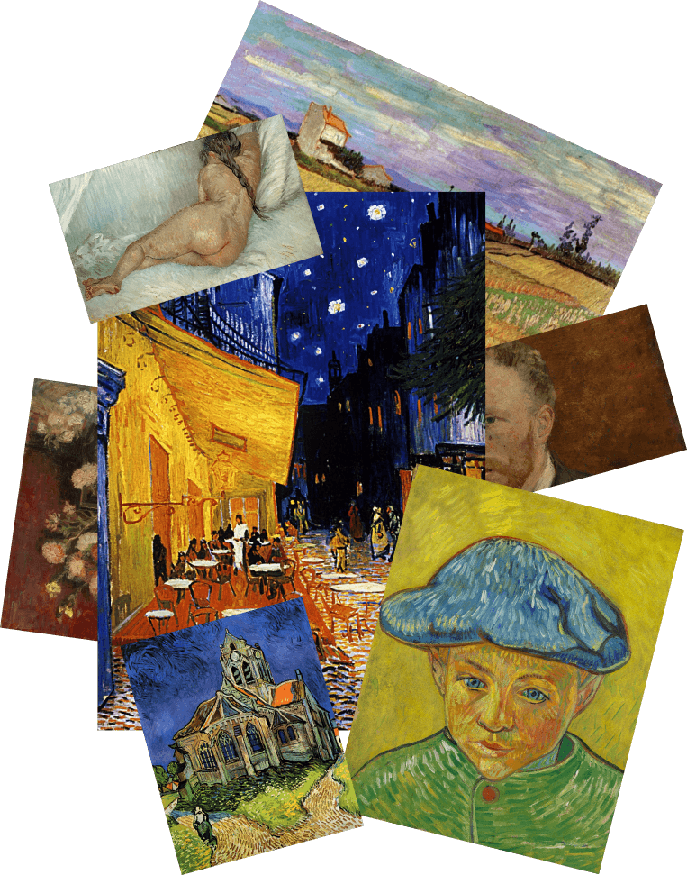

Винсент Ван Гог
Профессионально живописью он начал заниматься ближе к 30 годам. За неполные десять лет упорной работы Ван Гог написал около 870 картин
галерея ↗Профессионально живописью он начал заниматься ближе к 30 годам. За неполные десять лет упорной работы Ван Гог написал около 870 картин
галерея ↗